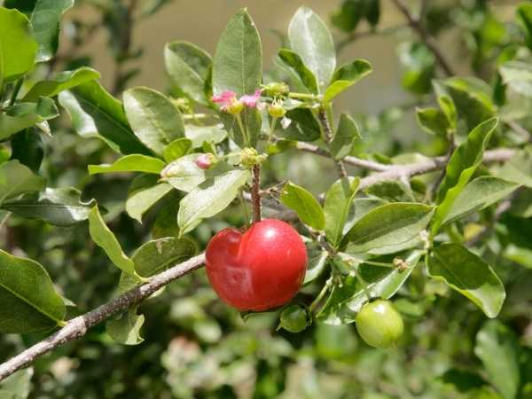

Malpighia emarginata
Common Names: Barbados Cherry, Acerola, West Indian Cherry, Wild Crapemyrtle
Local Name: Acerola (Portuguese/Spanish), Seresa (Filipino)
Family: Malpighiaceae
Origin: Tropical Americas — Southern Mexico, Central America, Caribbean, Northern South America
Plant Type: Perennial evergreen shrub to small tree
Variety: Acerola — renowned for extremely high Vitamin C content (up to 4,500 mg per 100g)
Average Lifespan: 15–25 years
| Growth Habit | Bushy, spreading evergreen shrub or small tree; dense branching |
| Plant Size | 2–5 meters tall; spread 2–4 meters |
| Leaves | Opposite, ovate to elliptic, 2–8 cm long, dark green, slightly glossy; irritating hairs (trichomes) on underside |
| Flowers | Pink to lavender, 5-petaled, 1–2 cm across; borne in axillary clusters of 3–5 |
| Flower Characteristics | Delicate fringed petals; bloom in flushes after rain; attract bees and butterflies |
| Fruit | Round to oblate drupe, 1–3 cm diameter, 3-lobed; thin skin, juicy tart flesh; extremely high Vitamin C |
| Fruit Color | Green turning bright red when ripe |
| Seed Characteristics | 3 small triangular seeds (pyrenes) per fruit; winged for dispersal |
| Root System | Shallow, fibrous root system; sensitive to waterlogging |
| Climate | Tropical to warm subtropical; frost-sensitive |
| Temperature Range | 20–35°C ideal; damaged below 0°C; young plants sensitive to cold |
| Rainfall Requirement | 1000–2000 mm annually; needs dry period for best fruiting |
| Soil Type | Well-drained sandy loam to clay loam; rich in organic matter |
| Soil pH Preference | 5.5–6.5 |
| Sun Requirement | Full sun (6+ hours daily) for best fruiting |
| Spacing | 3–5 meters between plants |
| Irrigation Method | Drip irrigation; consistent moisture during fruiting |
| Water Requirement | Moderate; avoid waterlogging; reduce water to induce flowering |
| Can it Grow in Pots? | Yes, in 20–30 liter pots; compact growth suits containers well |
| Fertilizer Schedule | Every 2–3 months during growing season; reduce in winter |
| Recommended Organic Fertilizers | Compost, vermicompost, bone meal, seaweed extract, fish emulsion |
| Pesticide Frequency | Monitor regularly; spray as needed during fruiting |
| Recommended Organic Pesticides | Neem oil, insecticidal soap, fruit fly traps, pyrethrin spray |
| Mulching Practice | Organic mulch to retain moisture; keep away from trunk |
| Training System | Open vase shape for air circulation and light penetration |
| Pruning Time | After harvest; shape in late winter before new growth |
| How to Prune | Remove dead and crossing branches; tip-prune for bushiness; thin interior for airflow |
| Common Pests | Fruit fly, aphids, whiteflies, nematodes, birds |
| Common Diseases | Anthracnose, cercospora leaf spot, root rot in waterlogged soils |
| Disease Prevention & Remedies | Good drainage, proper spacing, copper-based fungicides, remove infected material |
| Flowering Months | Multiple flushes per year; typically after rain following dry period |
| Fruiting Season | Year-round in tropics; 3–4 harvests per year possible |
| Days to Harvest | 22–25 days from flowering (very rapid) |
| Harvest Indicators | Fruit turns bright red; slightly soft; harvest promptly as fruit is very perishable |
| Average Yield per Plant | 20–50 kg per plant per year (mature, well-managed) |
| Pollination Type | Cross-pollination preferred; partially self-fertile |
| Pollination Notes | Solitary bees (Centris spp.) are primary pollinators; plant multiple varieties for best yield |
| Pollination Details | Oil-collecting bees (Centris) are specialized pollinators; cross-pollination significantly improves fruit set |
| Propagation by Seeds | Seeds germinate in 3–5 weeks; seedlings variable; fruit in 2–3 years |
| Propagation by Cuttings | Semi-hardwood cuttings under mist; root in 6–8 weeks with rooting hormone |
| Propagation by Grafting | Cleft or veneer grafting for commercial cultivars; ensures true-to-type plants |
| Water Usage | Moderate; efficient with drip irrigation |
| Soil Conservation Practices | Dense root system holds soil; mulching prevents erosion |
| Organic Practices Used | Organic production common for nutraceutical market; compost-based systems |
| Companion Plants | Leguminous ground covers, herbs, marigolds for pest deterrence |
| Biodiversity Benefits | Flowers support specialized oil-collecting bees; fruit feeds birds |
| Commercial Production Regions | Brazil (world's largest producer), Puerto Rico, Hawaii, India, Vietnam, Philippines |
| Market Uses | Fresh fruit, Vitamin C supplements, nutraceuticals, functional foods |
| Processing Uses | Frozen pulp, juice, powder, Vitamin C extract, capsules, cosmetics |
| Market Value (Approx.) | ₹200–600 per kg (fresh); acerola powder commands premium prices globally |
| Symbolism | Known as the "Vitamin C superfruit"; symbol of natural health in Brazil |
| Traditional Uses | Used in Caribbean folk medicine for liver ailments, diarrhoea, and fever; fruit juice as immune booster |
| Calories | 32 kcal per 100g |
| Dietary Fiber | 1.1 g per 100g |
| Vitamin C | 1,677 mg per 100g (up to 4,500 mg in unripe fruit) — one of the richest natural sources |
| Vitamin A | 767 IU per 100g |
| Iron | 0.2 mg per 100g |
| Potassium | 146 mg per 100g |
| Antioxidants | Extremely rich in ascorbic acid, carotenoids, anthocyanins, phenolic compounds |
| Other Key Nutrients | Thiamine, riboflavin, niacin, calcium, phosphorus, magnesium |
| Anxiety & Sleep | Not a primary use; general wellness support through nutrition |
| Immune Support | Exceptional Vitamin C content — one of nature's most potent immune boosters |
| Anti-inflammatory Properties | High antioxidant content shows significant anti-inflammatory effects in studies |
| Heart Health | Vitamin C and polyphenols support vascular health and reduce oxidative stress |
| Digestive Health | Traditionally used for diarrhoea; fruit acids aid digestion |
Disclaimer: Information provided is for educational purposes only and not a substitute for medical advice.
Add your field observations here.